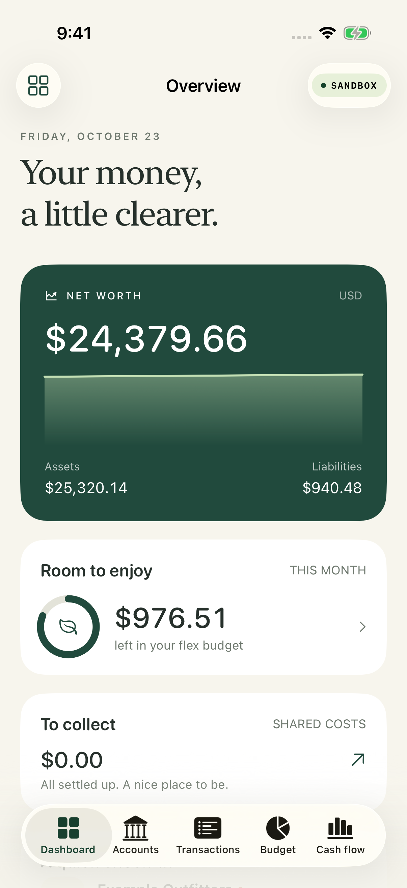
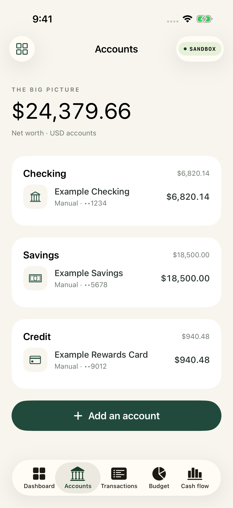
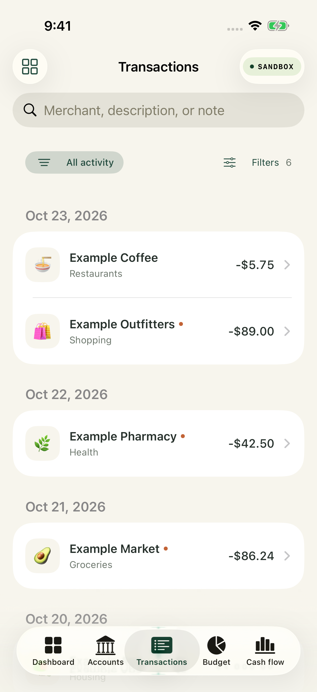
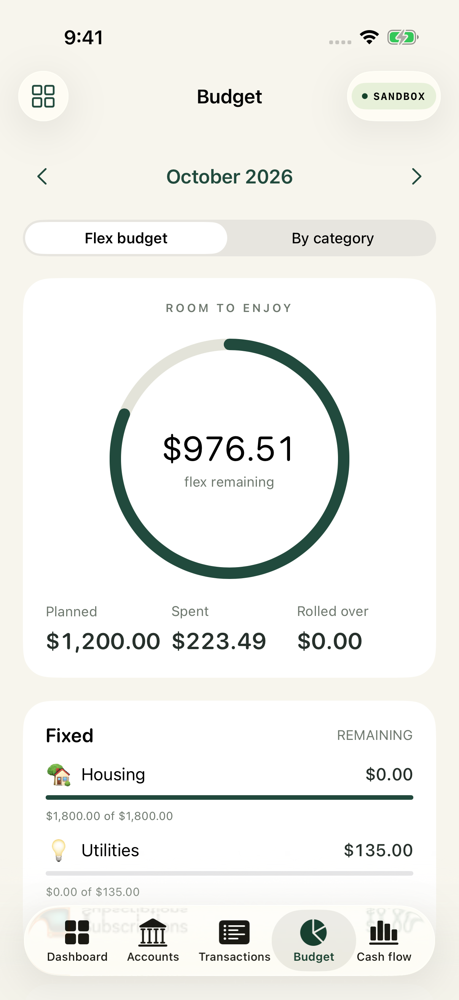
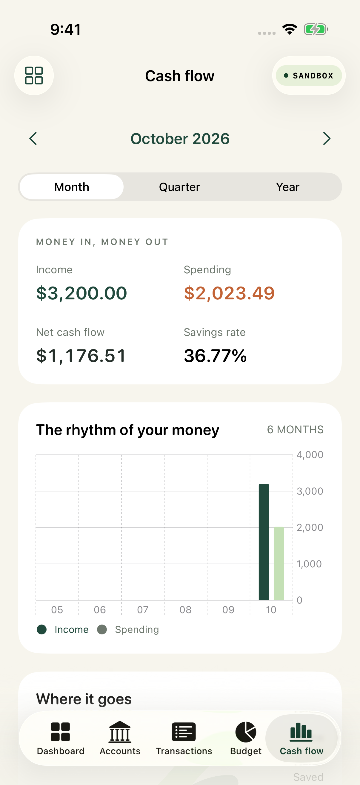
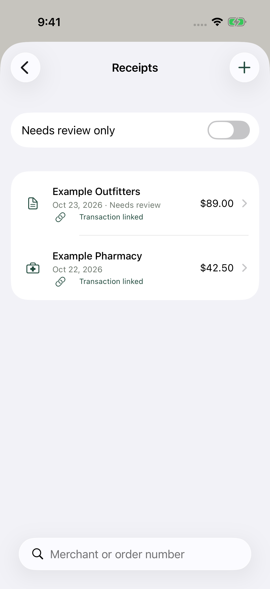
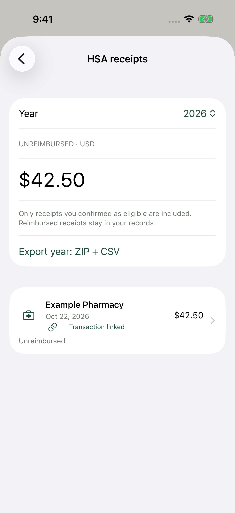
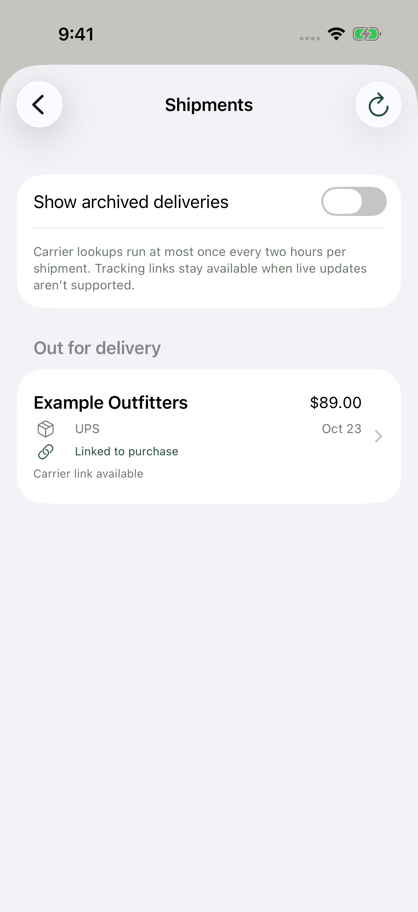
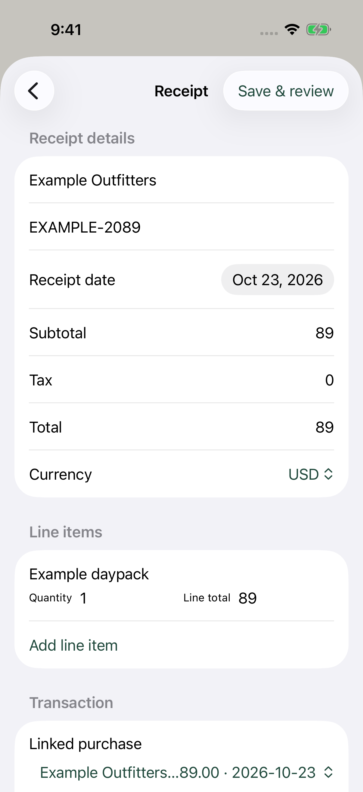
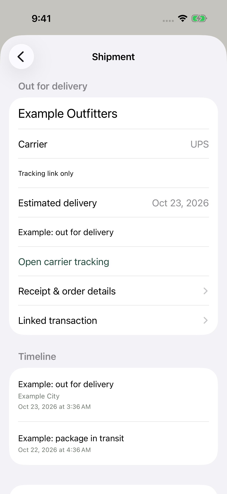

Real iPhone Simulator screenshots · iPhone 17 Pro · iOS 26.2 · Xcode 26.3.
All financial, receipt and delivery data shown are synthetic examples. Tap an image to open its original 1206 × 2622 PNG.
View the GitHub build and screenshot test · Capture provenance and checksums









